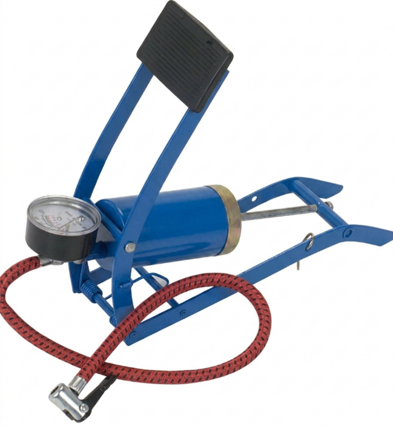
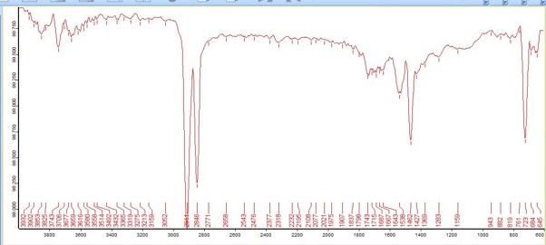
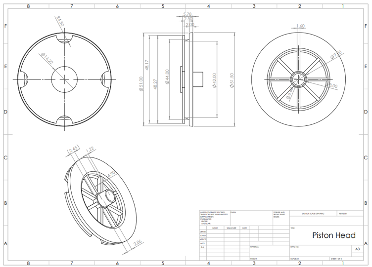
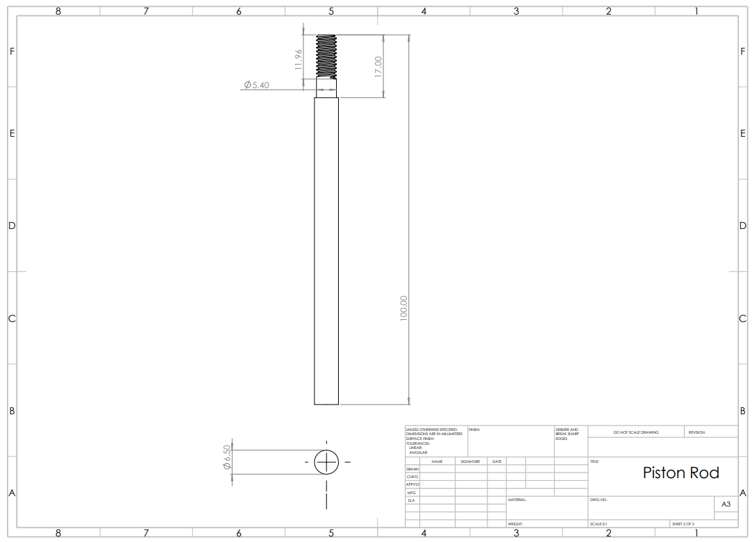
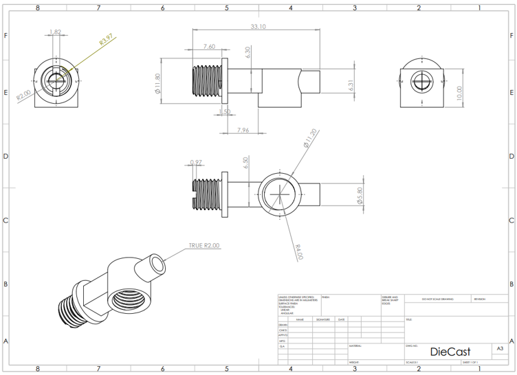
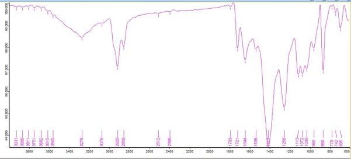
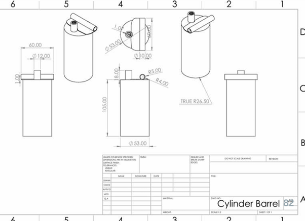
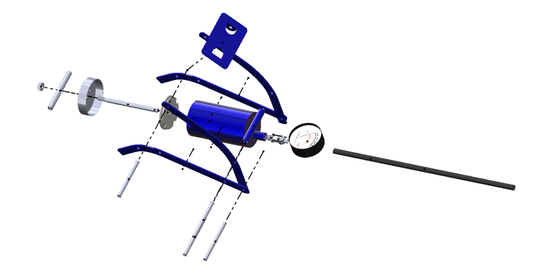

Reverse Engineering of a Foot Air Pump








Overview
Conducted as a Semester 4 Manufacturing Engineering project at the University of Moratuwa, this project involved the complete disassembly and reverse engineering of a mechanical foot air pump to deeply analyze its structural geometry, material composition, and manufacturing methodologies.
Material Analysis & Metrology
To accurately reconstruct the components, our team utilized precision engineering measuring instruments—including Vernier calipers, screw pitch gauges, and thickness gauges—to capture highly accurate dimensions, tolerances, and thread pitches. We then conducted comprehensive physical and chemical tests, such as FTIR, Rockwell Hardness, Density, and Spark testing. This rigorous testing allowed us to identify the exact materials used, such as HDPE for the piston lid, Low Carbon Steel for the rod, Zamak 3 for the hose fitting, and Polyurethane with a CaCO3 filler for the air hose.
Manufacturing Feasibility & CAD Modeling
Based on our precise physical measurements, we developed detailed 3D CAD models and production drawings for each component, mapping out mechanical fits and tolerances. We also evaluated the mass-production viability of the original parts, confirming the use of manufacturing techniques like injection molding, thread rolling, pressure die casting, extrusion, sheet metal blanking, and deep drawing.
Design Optimization
Going beyond pure analysis, we proposed practical design upgrades to improve the pump's performance, durability, and manufacturability. Key recommendations included standardizing the piston thread profile to M5 or M6, upgrading the hose braiding from Nylon to weather-resistant PET, and integrating cooling fins onto the exterior surface of the cylinder barrel for better heat dissipation.
Outcome
This comprehensive analysis provided a deep dive into the practical realities of mechanical design. It bridged the gap between theoretical knowledge and real-world application in precision metrology, material selection, and mass production planning.